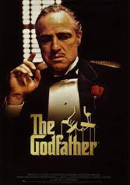
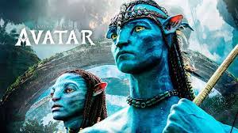

| pelicula |
año lanzamiento |
genero |
sipnosis |
plataforma |
imagen de referencia |
| El padrino |
1972 |
drama |
En el verano de 1945, se celebra la boda de Connie (Talia Shire) y Carlo Rizzi (Gianni Russo). Connie es la única hija de Don Vito Corleone (Marlon Brando), jefe de una de las familias que ejercen el mando de la Cosa Nostra en la ciudad de Nueva York. Don Vito además tiene otros tres hijos: su primogénito Sonny (James Caan), el endeble Fredo (John Cazale) y el más joven se todos, Michael (Al Pacino), un marine condecorado por su lucha en la Segunda Guerra Mundial que acaba de regresar a su hogar en Nueva York. Por designios de la fortuna, Michael terminará llevando la vida que no deseaba, tomando las riendas del negocio familiar, cambiando su moral y sus valores, para defender a toda costa a su familia. |
el padrino |
 |
| Iron man |
2008 |
ciencia ficcion |
Tony Stark (Robert Downey Jr., 'Chaplin'), dueño de Industrias Stark, inventor consagrado, vendedor de armas y playboy multimillonario, es secuestrado en Afganistán después de una demostración armamentística para el Ejército de los Estados Unidos. Forzado por sus captores a fabricar un arma temible, acaba construyendo en secreto una armadura de alta tecnología revolucionaria que usa para escaparse. |
iron man |
 |
| parasitos |
2019 |
suspenso |
Ki-taek (Kang-ho Song) es el patriarca de una familia pobre que malvive en un piso bajo en Seúl, pagando las facturas a base de trabajos precarios y robando el wi-fi de los vecinos. Su situación cambia un día en el que su hijo logra que le recomienden para dar clases particulares de inglés en casa de los Park, una familia acaudalada. Utilizando su ingenio, el joven conseguirá ganarse la confianza de la señora de la casa, y así irá introduciendo, poco a poco, al resto de sus familiares en distintos trabajos del servicio doméstico. Será el comienzo de un engranaje incontrolable, del cual nadie saldrá realmente indemne. |
parasitos |
 |
| avatar |
2009 |
aventura |
Corre el año 2154. Jake Sully es un antiguo marine que vive postrado en una silla de ruedas, pero cuya determinación y valentía se mantienen intactas. Ahora, tiene una misión entre manos: viajar a Pandora, un planeta del que los humanos extraen un mineral que puede acabar con la crisis energética de la Tierra. |
avatar |
 |
| Terrifier 2 |
2022 |
terror |
El payaso Art resucita en la morgue. Un año después, en la noche de Halloween, el siniestro psicópata vuelve al condado de Miles para atacar a unos hermanos adolescentes cuyo difunto padre les legó un libro con bocetos premonitorios sobre Art. |
el terrifier |
|